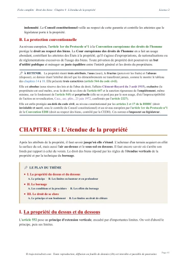

L'arrêt du 17 octobre 2007, l'interversion de titre du détenteur précaire
Le 17 octobre 2007, la troisième chambre civile de la Cour de cassation juge, sur le pourvoi n° 06-17.220, qu'un détenteur précaire, c'est-à-dire celui qui garde un bien pour le compte de son propriétaire, ne peut l'acquérir par prescription que si le titre de sa possession est interverti, notamment par la contradiction qu'il oppose au droit du propriétaire. Dans cette affaire, le délai de trente ans commence le jour de la publication de l'acte notarié du détenteur.
Que dit l'arrêt du 17 octobre 2007 sur l'interversion de titre ?
L'arrêt du 17 octobre 2007 juge que celui à qui un propriétaire a confié un terrain ne devient pas propriétaire en l'exploitant pendant trente ans. Le délai de la prescription ne commence à courir qu'à l'interversion de titre, soit le jour où le détenteur précaire fait clairement savoir qu'il se considère désormais comme le propriétaire du terrain.
La prescription acquisitive, aussi appelée usucapion, permet d'acquérir un bien en le possédant pendant un certain temps. Pour un immeuble, ce temps est de trente ans selon l'article 2272 du Code civil, ou de dix ans pour celui qui acquiert de bonne foi et avec un juste titre, autrement dit avec un acte qui aurait transféré la propriété si le vendeur avait été le vrai propriétaire. Ensuite, la possession est le fait de tenir une chose ou d'exercer un droit sur elle, selon l'article 2255. Elle suppose en effet un corpus, qui désigne la maîtrise matérielle de la chose, mais aussi un animus domini, qui est l'intention de se comporter en propriétaire. Enfin, pour permettre de prescrire, l'article 2261 exige qu'elle soit « continue et non interrompue, paisible, publique, non équivoque, et à titre de propriétaire ».
Le détenteur précaire tient au contraire la chose pour le compte d'une autre personne, comme un locataire ou un emprunteur. L'article 2266 lui interdit de prescrire, quelle que soit la durée de sa détention. L'interversion de titre est le changement par lequel il cesse de détenir pour autrui et commence à posséder pour lui-même. Le « titre » désigne ici la cause pour laquelle la personne tient le bien, par exemple un bail ou une simple confiance. L'article 2268 admet l'interversion dans deux cas, quand la cause vient d'un tiers ou quand le détenteur oppose une contradiction au droit du propriétaire. L'arrêt du 17 octobre 2007 applique le second cas. Pour le premier, prenons un locataire qui achète le logement à une personne qu'il croit propriétaire, et qui le tient dès lors à titre de propriétaire.
Le possesseur doit invoquer la prescription devant le juge, qui ne peut pas la soulever lui-même selon l'article 2247. Ici, les défendeurs à l'action des héritières, que l'arrêt appelle les consorts Z..., l'opposent donc en défense. Lorsque la prescription est reconnue, le jugement se borne ensuite à la constater. Dans l'arrêt rendu le 6 juillet 2022 sur le pourvoi n° 20-23.132, la troisième chambre civile juge que le jugement se borne à constater un droit déjà acquis, sans le créer. Elle rappelle aussi que la prescription acquisitive rétroagit, ce qui signifie que l'acquisition remonte à la date à laquelle la possession a commencé à courir.
L'arrêt est rendu par la troisième chambre civile de la Cour de cassation, qui juge notamment les litiges de propriété immobilière. Son numéro de pourvoi, 06-17.220, permet de le retrouver sur Légifrance. Il est publié au Bulletin des arrêts des chambres civiles de 2007, sous le numéro 180 de la troisième chambre civile, ce qui indique que la Cour lui reconnaît un intérêt pour la jurisprudence.
Un homme à qui on a confié une parcelle fait établir en 1980 un acte notarié dans lequel il se dit propriétaire par prescription. Quand les héritières de la propriétaire le convoquent devant le tribunal en 2000, lui et son épouse répondent par plus de trente ans d'actes d'exploitation. La Cour de cassation rejette pourtant leur recours, car ces actes pouvaient être ceux d'un simple détenteur. Le délai de trente ans a donc commencé seulement à la publication de l'acte, le 27 novembre 1981, et il n'était pas écoulé le jour où les héritières ont agi.
Mme Berthe X... acquiert de Mme Y... la parcelle de terre désignée HL 45.
M. Jean Z..., à qui la parcelle avait été confiée, fait constater devant notaire qu'il l'a acquise par prescription trentenaire.
L'acte est publié. Pour la Cour, c'est le jour où M. Z... fait clairement connaître qu'il se considère comme propriétaire.
Les héritières de Mme Berthe X... convoquent M. Z... et son épouse devant le tribunal pour être déclarées seules propriétaires de la parcelle.
La cour d'appel d'Aix-en-Provence donne raison aux héritières. La Cour de cassation rejette le recours des consorts Z...

Fiche complète
Droit des biens L2
Les faits, une parcelle confiée qu'on prétend ensuite avoir prescrite
Le texte publié par la Cour de cassation remplace les noms des personnes par des lettres. La propriétaire initiale y est Mme Berthe X..., celui qui invoque la prescription y est M. Jean Z..., et la décision ne porte le nom d'aucune partie, si bien qu'on la cite par sa seule date.
Le 12 décembre 1931, Mme Berthe X... achète de Mme Y... une parcelle de terre désignée sous la référence HL 45. L'arrêt ne précise ni la commune ni la superficie du terrain.
M. Jean Z... se voit confier cette parcelle par M. C..., l'époux de Mme Berthe X... L'arrêt ne donne ni la date de cette remise ni ses conditions, par exemple si elle était gratuite ou payante. Cette remise explique toute l'affaire, puisqu'elle donne à M. Z... la qualité de détenteur précaire.
Le 3 décembre 1980, M. Z... fait établir devant notaire un acte intitulé « notoriété prescriptive ». Un acte de notoriété est un acte rédigé par un notaire pour consigner une situation que la personne affirme, souvent avec des témoins qui l'attestent. Ici, M. Z... fait constater qu'il a acquis la parcelle par prescription trentenaire, c'est-à-dire en la possédant pendant trente ans. L'acte porte la date du 3 décembre 1980, mais il n'est publié que le 27 novembre 1981. La publication est l'enregistrement de l'acte dans le fichier public où chacun peut consulter qui est propriétaire de chaque parcelle, aujourd'hui tenu par le service de la publicité foncière.
Le 18 avril 2000, deux héritières de Mme Berthe X..., Mme Élisabeth X..., veuve A..., et Mme Juliette B..., veuve X..., assignent M. Jean Z... et son épouse, Mme Rose Z... M. Daniel Z... est l'ayant droit de M. Jean Z..., c'est-à-dire celui qui a reçu ses droits et qui le représente dans le procès. Assigner quelqu'un, c'est le convoquer devant un tribunal. Les héritières demandent alors à être déclarées seules propriétaires de la parcelle HL 45.
Cette assignation intervient plus de soixante-huit ans après l'achat de 1931. Elle arrive aussi plus de dix-neuf ans après la date de l'acte notarié et plus de dix-huit ans après sa publication. Les héritières réclament ainsi la parcelle en tant qu'héritières de la propriétaire qui l'avait achetée, tandis que les défendeurs, que l'arrêt désigne comme les consorts Z..., invoquent la prescription trentenaire de la parcelle au profit de M. Jean Z...
La procédure, un jugement confirmé par la cour d'appel d'Aix-en-Provence
La Cour de cassation ne décrit pas le jugement de première instance, dont elle ne donne ni la juridiction ni la date. Elle indique seulement que la cour d'appel le confirme, ce qui veut dire qu'elle donne raison aux héritières comme lui, sans adopter ceux de ses motifs qui seraient contraires aux siens.
La cour d'appel d'Aix-en-Provence rend son arrêt le 29 mars 2006 et accueille la demande des héritières, en suivant le raisonnement que la Cour de cassation rapporte.
- La règle. Un détenteur précaire ne peut prescrire que si le titre de sa possession est interverti, notamment par la contradiction qu'il oppose au droit du propriétaire.
- La qualification. M. Z... s'est vu confier la parcelle par l'époux de la propriétaire, et il est donc un détenteur précaire.
- Les actes d'exploitation. Si les consorts Z... prouvaient avoir exploité la parcelle pendant plus de trente ans, ces actes ne montreraient pas la volonté de se comporter en propriétaire, puisqu'un détenteur précaire peut les avoir accomplis.
- La date. L'interversion n'est intervenue qu'au jour où M. Z... a clairement fait connaître qu'il se considérait comme propriétaire, soit à la publication de l'acte notarié, le 27 novembre 1981. Le délai de trente ans a donc commencé ce jour-là, et moins de trente ans s'étaient écoulés le jour de l'assignation.
La Cour de cassation formule la troisième étape par hypothèse, avec la tournure « si les consorts Z... établissaient avoir réalisé » ces actes. Cette formulation suggère que la cour d'appel n'avait pas besoin de décider si ces actes étaient prouvés, puisque même prouvés ils ne changeaient rien.
Les consorts Z... forment alors un pourvoi, c'est-à-dire un recours devant la Cour de cassation. Cette juridiction vérifie seulement que la cour d'appel a correctement appliqué la loi aux faits qu'elle a constatés. Elle rend sa décision le 17 octobre 2007.
Les arguments des parties, trente ans d'exploitation contre une parcelle confiée
Les consorts Z... présentent un moyen unique, c'est-à-dire un seul argument de droit, qui comporte deux branches. Chaque branche reproche à la cour d'appel d'avoir violé la loi.
- Première branche, des actes d'exploitation qui montrent l'intention d'être propriétaire. Les consorts Z... invoquent les articles 2229 et 2238 du Code civil, dans leur numérotation d'avant la réforme de 2008. L'article 2229, devenu l'article 2261, énumère les qualités de la possession. L'article 2238, devenu l'article 2268, permet l'interversion. Leur raisonnement part de la règle selon laquelle la prescription suppose des actes matériels d'usage ou de jouissance, c'est-à-dire des gestes concrets d'utilisation de la chose. Ils en déduisent ensuite que mettre des terres en culture et planter des arbres montre, sans équivoque, la volonté de se comporter en propriétaire. Or la cour d'appel a refusé de voir cette volonté dans les actes qu'ils citent. Selon eux, pendant plus de trente ans, ils ont cultivé divers fruits et planté des arbres fruitiers. Ils ont en outre entretenu les oliviers et installé un système d'arrosage. La cour d'appel aurait donc violé ces deux textes.
- Deuxième branche, on peut toujours prescrire contre un titre. Selon le moyen, la cour d'appel a jugé que le titre de propriété de Mme Berthe X..., antérieur à la possession invoquée par M. Z..., donnait aux héritières la preuve du droit le meilleur, c'est-à-dire du titre de propriété le plus solide. Les consorts Z... répondent qu'il est toujours possible de prescrire contre un titre. Prescrire contre un titre, c'est acquérir un bien malgré le titre de propriété d'un autre, ce qui est la fonction même de l'usucapion. Un titre plus ancien ne peut donc pas suffire à faire échouer celui qui a prescrit. Ils invoquent enfin l'article 712 du Code civil, selon lequel la propriété s'acquiert aussi par prescription.
L'arrêt ne rapporte pas les conclusions écrites des héritières devant la cour d'appel. Leur position se déduit du raisonnement de la cour d'appel que la Cour de cassation approuve. M. Z... avait reçu la parcelle de l'époux de la propriétaire, il était donc détenteur précaire, et il n'avait pas contredit leur droit avant la publication de l'acte de 1981.
Le problème de droit
Une personne à qui un propriétaire a confié un terrain peut-elle l'acquérir par trente ans de prescription, du seul fait qu'elle l'a exploité comme le ferait un propriétaire ?
Si elle doit d'abord changer la nature de sa détention, à quelle date ce changement se produit-il, et la publication d'un acte notarié dans lequel elle se dit propriétaire suffit-elle à le marquer ?
La solution de la troisième chambre civile, un rejet fondé sur l'interversion
La Cour de cassation rejette le pourvoi, ce qui veut dire qu'elle donne tort aux consorts Z... et laisse subsister l'arrêt d'Aix-en-Provence. Elle met aussi à leur charge les dépens, qui sont les frais du procès, et leur demande de rembourser 2 000 euros de frais de procédure aux héritières.
Ce que la Cour approuve
« ayant retenu à bon droit que le détenteur précaire ne pouvait prescrire que si le titre de sa possession se trouvait interverti notamment par la contradiction qu'il avait opposée au droit du propriétaire [...] que l'interversion de titre n'était intervenue qu'au jour où M. Z... avait clairement fait connaître qu'il se considérait comme propriétaire, à savoir au jour de la publication de l'acte notarié en date du 3 décembre 1980, soit le 27 novembre 1981 »Cass. 3e civ., 17 octobre 2007, n° 06-17.220
Première étape, la règle. La Cour approuve la cour d'appel d'avoir retenu « à bon droit » qu'un détenteur précaire ne prescrit que si le titre de sa possession est interverti. La règle existait déjà, puisque l'article 2238 de l'ancien Code civil la prévoyait. La Cour, qui ne cite pas cet article dans sa réponse, confirme donc qu'elle s'applique à celui à qui l'on a confié un bien.
Deuxième étape, la qualification. M. Z... s'est vu confier la parcelle par l'époux de la propriétaire. Il est donc un détenteur précaire. Dans la grille de l'article 2261, que la Cour ne cite pas, cela revient à dire que la possession « à titre de propriétaire » lui fait défaut tant qu'il n'a pas changé de titre, car il tient la parcelle pour autrui.
Troisième étape, les actes d'exploitation. Même si les consorts Z... prouvaient trente ans d'exploitation, ces actes ne montrent pas la volonté de se comporter en propriétaire, puisqu'ils pouvaient être ceux d'un détenteur précaire. La Cour approuve ce raisonnement.
Quatrième étape, la date. L'interversion date du jour où M. Z... a clairement fait connaître qu'il se considérait comme propriétaire, c'est-à-dire de la publication de l'acte, le 27 novembre 1981. Le délai de trente ans court à partir de ce jour, et moins de trente ans s'étaient écoulés le jour de l'assignation. Les consorts Z... ne peuvent donc pas invoquer la prescription acquisitive.
Les deux branches du moyen. La Cour conclut que « le moyen n'est pas fondé » sans répondre séparément à chaque branche. Son rejet repose sur la précarité de la détention, car avant l'interversion M. Z... n'avait pas de possession utile pour prescrire. Il ne reprend pas l'idée du droit le meilleur, et l'ancienneté du titre de la propriétaire devient donc secondaire.
Pourquoi trente ans d'exploitation ne suffisent-ils pas à devenir propriétaire ?
L'exploitation d'un terrain s'explique de deux façons, car elle peut être celle d'un propriétaire ou celle d'une personne qui s'occupe du terrain pour le compte du propriétaire.
L'article 2261 exige une possession non équivoque, c'est-à-dire qui ne laisse aucun doute sur l'intention de se comporter en propriétaire. Or celui qui tient un terrain d'autrui le cultive et l'arrose exactement comme le ferait un propriétaire. Un voisin ou un héritier qui observe ces gestes y voit quelqu'un qui s'occupe du terrain, et il n'y voit aucune prétention à la propriété.
Prenons une personne qui garde pendant trente ans la maison de vacances d'un ami. Elle tond la pelouse et taille les arbres. Personne n'y voit pourtant l'acte d'un propriétaire, puisque l'ami lui a confié la maison. Ces gestes changent donc de sens le jour où elle annonce à l'ami que la maison lui appartient.
Le Code civil organise cette logique par deux présomptions. D'abord, l'article 2256 présume qu'on possède toujours pour soi et comme propriétaire, sauf preuve qu'on a commencé à posséder pour un autre. Dans l'affaire, la remise de la parcelle par l'époux de la propriétaire renverse donc cette présomption. L'article 2257 ajoute ensuite une seconde présomption, car celui qui a commencé à posséder pour autrui est présumé garder la même qualité, sauf preuve contraire. La Cour ne cite pas ces deux articles dans sa réponse. Ils expliquent pourtant pourquoi il revient logiquement à M. Z... d'établir le changement de titre.
La Cour retient la publication de l'acte plutôt que sa date d'établissement. L'arrêt ne motive pas ce choix en détail, mais l'expression « clairement fait connaître » indique qu'une contradiction doit pouvoir être connue de celui à qui elle s'adresse. L'explication la plus probable est que, tant que l'acte restait chez le notaire, la propriétaire et ses héritières n'avaient pas de moyen certain de l'apprendre. Sa publication, elle, le met en effet à la disposition de tous.
Dans cette affaire, ce choix ne change pas le résultat, puisque moins de trente ans séparent chacune des deux dates de l'assignation. Il compterait cependant dans un litige où ces deux dates tomberaient de part et d'autre de la limite des trente ans, car le choix de la date ferait alors gagner ou perdre le détenteur.
La portée, de l'article 2238 ancien à l'article 2268 actuel
Au moment de l'arrêt, la règle figurait aux articles 2236 à 2238 du Code civil. La loi du 17 juin 2008 sur la prescription les a ensuite renumérotés en articles 2266 à 2268, avec la même règle. L'article 2266 pose que ceux qui possèdent pour autrui ne prescrivent jamais. L'article 2267 étend cette règle à leurs héritiers. Enfin, l'article 2268 admet l'interversion « soit par une cause venant d'un tiers, soit par la contradiction qu'elles ont opposée au droit du propriétaire ». La solution de 2007 reste donc applicable sous la numérotation actuelle, et quatre décisions de la même chambre, rendues entre 2006 et 2024, complètent ce régime de la possession.
- Le 27 septembre 2006, un an avant. Dans l'arrêt rendu sur le pourvoi n° 05-14.561, la troisième chambre civile rejette le pourvoi des héritiers d'un locataire, qui soutenaient que demeurer dans les lieux au terme du bail pendant quarante-quatre ans sans payer de loyer constituait une contradiction du droit du propriétaire. Elle approuve la cour d'appel d'avoir retenu que le seul fait pour un locataire d'avoir cessé de payer le loyer ne suffisait pas pour intervertir son titre.
- Le 2 mars 2017. Dans l'arrêt rendu sur le pourvoi n° 15-27.923, deux voisins se disputent la limite de leurs terrains, ce qu'on appelle un bornage. Un portail et un escalier avaient été installés à l'origine avec la simple tolérance du prédécesseur de la voisine, de qui elle tient son terrain. Cette tolérance signifie que l'installation se faisait sans droit mais sans opposition de sa part. La cour d'appel avait jugé qu'un acte notarié de vente de 1971 constituait une interversion du titre initial. Selon la cour d'appel, cet acte ne mentionnait plus la tolérance et désignait la maison avec toutes ses dépendances, ce qui incluait le portail et l'escalier. La Cour de cassation rejette le pourvoi et juge que la cour d'appel a pu en déduire que la propriété de ces ouvrages pouvait s'acquérir par prescription à compter de cette date. Cette exigence d'une interversion s'explique par l'article 2262, que la Cour ne cite pas, puisqu'il interdit de fonder une possession sur de simples actes de tolérance. La situation diffère toutefois de 2007, car l'acte de 1971 est une vente consentie au prédécesseur du possesseur, alors qu'en 2007 l'acte est une déclaration du possesseur lui-même. Dans les deux affaires, un acte notarié marque pourtant le début du délai.
- Le 10 octobre 2024. Dans l'arrêt rendu sur le pourvoi n° 23-17.458, la troisième chambre civile, en formation de section, une formation plus restreinte que la chambre entière, casse en partie un arrêt de Grenoble, c'est-à-dire qu'elle l'annule sur certains points et renvoie l'affaire devant une autre cour d'appel. Elle juge qu'un acte notarié constatant une usucapion ne peut pas, par lui-même, établir celle-ci. Le juge doit en revanche apprécier la force probante des témoignages relatés dans l'acte, autrement dit leur capacité à établir la possession. En 2007, l'acte intervient comme une déclaration d'intention qui fixe une date, alors qu'en 2024, il est examiné comme un élément de preuve de la possession. Je lis ces deux usages comme complémentaires.
- Le 24 octobre 2024. Dans l'arrêt rendu sur le pourvoi n° 23-16.882, la même chambre casse un arrêt de Versailles qui refusait l'intention de se comporter en propriétaire à une société, parce qu'elle avait proposé d'acheter les parcelles à leurs anciens propriétaires. La Cour juge que « la conscience du possesseur de ne pas être propriétaire est sans incidence sur l'appréciation de son intention de se conduire comme tel ». Un possesseur peut donc savoir qu'il n'est pas propriétaire et prescrire quand même, tandis que le détenteur précaire, qui tient le bien pour autrui, ne le peut jamais sans interversion.
Pour la notion de détention précaire elle-même, tu peux lire ma page sur la possession et la détention précaire. L'arrêt Vollard montre l'autre grand obstacle à la revendication d'un bien, la possession de celui qui le détient, dans la fiche consacrée à l'arrêt du 2 juin 1993. Un TD de droit des biens de L3 à l'UPEC, en octobre et novembre 2025, range d'ailleurs l'arrêt du 17 octobre 2007 sous l'intitulé « L'interversion du titre ».
La critique, une règle claire mais un acte que le propriétaire ignore parfois
La solution protège d'abord ceux qui confient un bien. Si trente ans d'exploitation suffisaient, une personne qui laisse un terrain à un parent ou à un voisin de confiance risquerait de le perdre en lui rendant service. Elle fournit ensuite une date vérifiable, puisqu'une publication au fichier foncier porte une date certaine, alors que l'intention intérieure d'un détenteur reste difficile à prouver.
La première difficulté tient à la connaissance de l'acte par le propriétaire. L'arrêt retient que le détenteur a « clairement fait connaître » qu'il se considérait comme propriétaire, mais il se contente ici de la publication de l'acte. Or un propriétaire ne consulte pas régulièrement le fichier de la publicité foncière pour savoir si quelqu'un se déclare maître de son terrain. Dans l'affaire du 2 mars 2017, le pourvoi soutenait qu'une interversion suppose que l'acte soit connu du véritable propriétaire. La Cour refuse d'examiner pour la première fois le reproche tiré du caractère équivoque de la contradiction, car la demanderesse ne l'avait pas soulevé devant la cour d'appel. Elle ne répond pas expressément à l'argument de la méconnaissance de l'acte par le propriétaire, mais elle rejette le surplus du moyen comme non fondé.
La règle limite en revanche le risque qu'un détenteur s'approprie le bien par une simple déclaration. Dans cette affaire, l'acte publié fait courir le délai, mais le détenteur doit ensuite prouver trente ans d'actes de possession à titre de propriétaire, et l'arrêt du 10 octobre 2024 rappelle d'ailleurs que l'acte notarié ne les prouve pas à lui seul.
La Cour ne dit pas si un autre comportement que la publication d'un acte, comme une lettre adressée au propriétaire, intervertirait aussi le titre. L'arrêt ne tranche donc que le cas de l'acte publié.
Comment utiliser l'arrêt du 17 octobre 2007 dans une copie
Dans une dissertation. Tu le cites pour un sujet sur la possession ou sur l'usucapion, dans la partie consacrée aux conditions d'une possession utile. Tu expliques d'abord que l'article 2266 interdit au détenteur précaire de prescrire, puis tu montres avec l'arrêt que seule l'interversion lève cet obstacle. Ma dissertation corrigée sur la possession montre en outre comment placer cet arrêt dans un plan.
Dans un cas pratique. Prenons Camille, qui confie en 1990 un champ à son cousin Hugo. Hugo le cultive jusqu'en 2025, mais il n'a jamais rien déclaré à Camille. Tu qualifies d'abord Hugo de détenteur précaire, puisqu'il tient le champ de Camille. L'article 2266 lui interdit alors de prescrire, et l'article 2268 exige une interversion pour que cela change. Il reste ensuite à chercher dans les faits une date de contradiction. Si Hugo n'en a accompli aucune, ses trente-cinq ans d'exploitation ne suffisent pas et il ne peut pas prescrire. S'il avait fait publier en 2005 un acte notarié dans lequel il se dit propriétaire, le délai de trente ans ne courrait qu'à compter de 2005 d'après l'arrêt du 17 octobre 2007, donc jusqu'en 2035.
Dans un commentaire d'arrêt. Le commentaire distingue la règle, selon laquelle le détenteur précaire ne prescrit qu'avec une interversion, de son application, qui tient aux actes équivoques et à la date de publication. Il montre ensuite les prolongements de 2017 et de 2024, car ces arrêts apportent des précisions sur la possession et sur la preuve de l'usucapion. Toute la méthode figure par ailleurs dans ma page sur la fiche d'arrêt et dans celle sur le commentaire d'arrêt.
Les erreurs à éviter avec l'arrêt du 17 octobre 2007
- Croire que trente ans d'exploitation suffisent. Un détenteur précaire peut cultiver un terrain pendant un demi-siècle sans prescrire, tant qu'il n'a pas contredit le droit du propriétaire. L'exploitation seule reste équivoque, et l'article 2266 interdit de prescrire à celui qui possède pour autrui.
- Dater l'interversion de l'acte notarié lui-même. L'arrêt retient le jour de la publication de l'acte, le 27 novembre 1981, alors que l'acte porte la date du 3 décembre 1980. Tu donnes donc la date de publication.
- Écrire que l'acte de notoriété prouve la propriété. L'acte de 1980 a servi à dater l'interversion. L'arrêt du 10 octobre 2024 juge qu'un acte notarié constatant une usucapion ne peut pas, par lui-même, établir celle-ci.
- Citer l'article 2238 comme texte en vigueur. L'arrêt applique l'article 2238 dans sa numérotation d'avant la loi du 17 juin 2008. Tu cites aujourd'hui l'article 2268 pour le texte, et l'arrêt pour son application.
- Attribuer à la Cour l'idée du droit le meilleur. Cette idée vient du pourvoi, qui la prête à la cour d'appel. La Cour fonde son rejet sur la précarité de la détention et sur la date de l'interversion.
Questions fréquentes
Que dit l'arrêt du 17 octobre 2007 en une phrase ?
Qu'est-ce que l'interversion de titre ?
À quelle date le délai de prescription commence-t-il pour un détenteur précaire ?
L'arrêt du 17 octobre 2007 est-il toujours d'actualité ?
Comment citer l'arrêt du 17 octobre 2007 en copie ?
Ma fiche de droit des biens L2 explique la possession et la détention précaire.
Un chapitre entier porte sur la notion de possession, avec la détention précaire et l'interversion de titre, puis les qualités que la possession doit réunir pour permettre de prescrire.
Voir la fiche de droit des biens L2